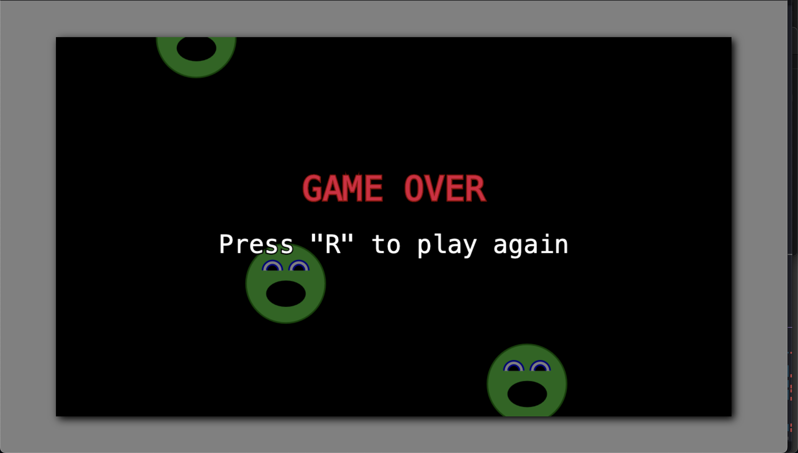

Game Over
Whenever our player runs into an enemy, it will need to be destroyed,
and we'll need to show a "Game Over" screen, with the option to play
again. We'll handle all this with a simple
gameOver flag added to our
Game class. We'll use this as a
switch to disable collision detection and the drawing of our player,
as well as to enable the drawing of our Game Over screen and our
restart functionality.
// Game.ts
// setup...
gameOver: boolean = false;
// detectCollisions
if (collisionDetected) {
this.gameOver = true;
}
We've removed the placeholder background color change behavior that we
were using to visualize collision detection, setting our new
gameOver flag instead. Now we can
use this to disable anything that we don't want to happen when the
game is over and to show the game over screen. Let's start by hiding
the player.
// Game.ts
private draw(): void {
// ...
if (!this.gameOver) this.player.draw();
// ...
}
That was easy! Let's see how it worked.
Well, the player is hidden, but can still fire projectiles, and the enemies can still be destroyed. Let's disable those things as well.
// Player.ts
document.addEventListener("keydown", (evt) => {
if (this.game.gameOver) return;
// ...
}
// Game.ts
private loop = (ms: number): void => {
// ...
if (!this.gameOver) this.detectCollisions();
};
Much better. We now technically have game over functionality. It's not pretty, but it works. Let's make it better by adding a Game Over screen.
// Game.ts
private draw(): void {
// ...
if (this.gameOver) {
this.showGameOver();
}
}
private showGameOver(): void {
// overlay
this.ctx.fillStyle = "rgba(0, 0, 0, 0.5)";
this.ctx.fillRect(0, 0, this.ctx.canvas.width, this.ctx.canvas.height);
this.ctx.fillStyle = "crimson";
this.ctx.strokeStyle = "darkred";
this.ctx.lineWidth = 5;
this.ctx.font = "64px monospace";
this.ctx.textAlign = "center";
this.ctx.strokeText(
"GAME OVER",
this.ctx.canvas.width / 2,
this.ctx.canvas.height / 2 - 50
);
this.ctx.fillText(
"GAME OVER",
this.ctx.canvas.width / 2,
this.ctx.canvas.height / 2 - 50
);
}
There, a proper Game Over screen. We make a transparent overlay and print our game over text on it, leaving straggling projectiles and the victorious enemies floating around in the background for a little visual interest.
If we've done our job in making the game fun, our players aren't going to want to stop here. They'll want to play again. Right now, the only way to do that is to refresh the browser. Not a great user experience. Let's give the player an option to play again.
First, we'll display some text to let them know they can do this, just underneath our game over text.
this.ctx.fillStyle = "white";
this.ctx.strokeStyle = "black";
this.ctx.font = "48px monospace";
this.ctx.strokeText(
'Press "R" to play again',
this.ctx.canvas.width / 2,
this.ctx.canvas.height / 2 + 50
);
this.ctx.fillText(
'Press "R" to play again',
this.ctx.canvas.width / 2,
this.ctx.canvas.height / 2 + 50
);

Now we have to actually handle the "R" keypress.
// Game.ts
// in the constructor
document.addEventListener("keydown", (evt) => {
if (this.gameOver && evt.key === "r") {
this.refresh();
}
});
private refresh(): void {
this.projectiles = [];
this.spawnEnemies();
this.player.pos = new Vec2(
this.ctx.canvas.width / 2,
this.ctx.canvas.height / 2
);
this.player.vel = new Vec2(0, 0);
this.gameOver = false;
}
We've added a keydown listener in the constructor of our
Game class to listen for an "r"
keypress when the gameOver flag
is set. (If we omit this
gameOver check, we can restart
the game at any time with the "r" key, and we don't want that.) This
triggers our refresh process,
clearing any remaining projectiles, spawning a fresh batch of enemies,
resetting our player's position and velocity, (remember, we haven't
actually destroyed our player, just hidden them), and un-setting our
gameOver flag to reactivate all
the game functionality we disabled. Let's give it a try.
Perfect! I think we're good here. When our player is hit, we disable gameplay, show a reasonable game over screen, and let the player restart with the "r" button.
There is another "end" to the game we haven't considered just yet. If our player manages to destroy all the enemies, there's nothing more for them to do. The game doesn't end, but we also don't generate any more enemies. In the next section, we'll expand the game play by creating more enemies when the level is cleared. We'll also want to make each individual enemy more interesting by splitting into smaller enemies after being hit, until a certain size is reached, at which time they'll be destroyed. We'll also add durability to enemies, randomly making some enemies more difficult to defeat. See you in the next section!